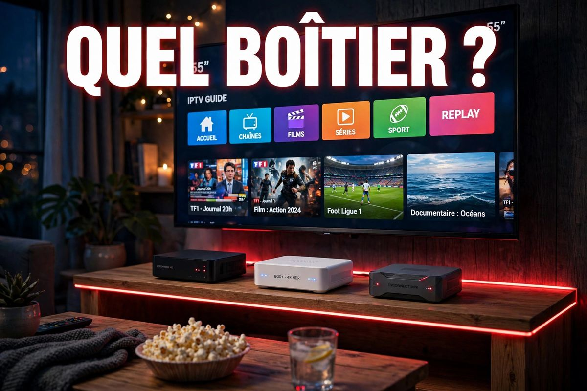
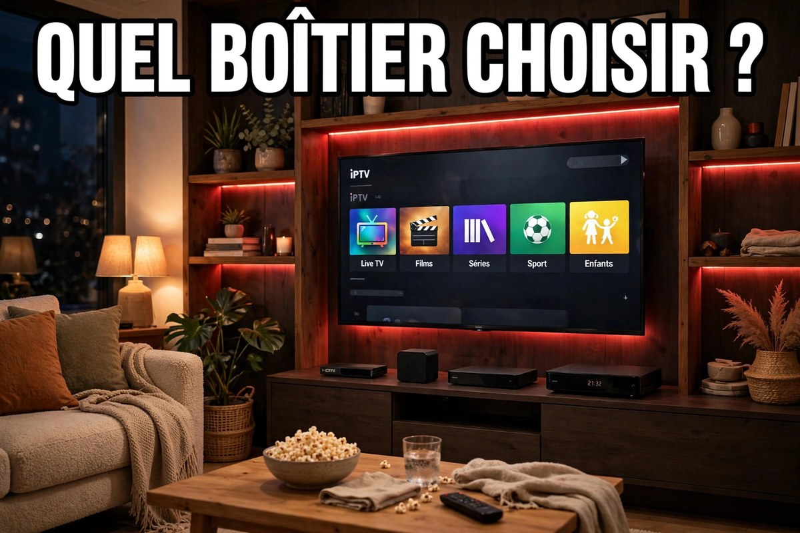
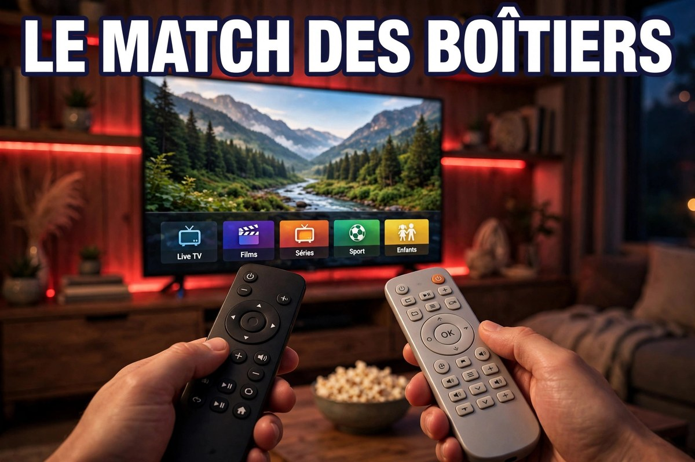

Matériel
Quel boîtier IPTV choisir en 2026 ?
Quel boîtier IPTV choisir en 2026 ? Fire TV Stick, box Android TV, Apple TV 4K ou boîtier MAG : comparatif, critères qui comptent et erreurs à éviter.

Faut-il vraiment un boîtier pour l’IPTV ?
Dernière vérification : 20 novembre 2026.
Pas forcément. Si votre téléviseur est une Smart TV récente, une application installée directement dessus peut suffire : c’est ce que nous expliquons dans notre guide installer l’IPTV sur Smart TV. Un boîtier devient pourtant intéressant dans plusieurs cas :
- votre téléviseur n’est pas connecté, ou il est trop ancien pour recevoir les applications récentes ;
- votre Smart TV est lente, se fige ou ferme les applications ;
- l’application que vous voulez, comme TiviMate, n’existe pas sur le système de votre télé ;
- vous voulez une connexion Ethernet alors que votre télé n’en a pas, ou un Wi-Fi plus performant ;
- vous souhaitez un appareil transportable pour les vacances.
Un boîtier coûte entre 40 et 200 euros selon le modèle, et il est généralement beaucoup plus fluide que les applications intégrées aux téléviseurs.
Envie de tester ? Essai gratuit de 24 h, activation rapide et aide à l’installation sur WhatsApp.
Demander mon essai gratuitLes critères qui comptent vraiment

Avant de comparer les modèles, voici ce qui fait la différence pour l’IPTV :
- La puissance et la mémoire vive : au moins 2 Go de RAM pour une navigation fluide dans un guide de milliers de chaînes.
- Le stockage : 8 Go minimum, 16 Go ou plus pour être tranquille avec plusieurs applications.
- Les codecs vidéo : la prise en charge du HEVC (H.265) est indispensable pour la 4K et utile pour la Full HD à faible débit.
- Le réseau : un port Ethernet ou au moins un Wi-Fi 5 ou 6 de bonne qualité.
- Le système : un système certifié et mis à jour (Android TV, Google TV, Fire OS, tvOS) donne accès aux meilleures applications et aux correctifs de sécurité.
- La télécommande : simple, avec des touches de navigation claires, et si possible un bouton de raccourci personnalisable.
Amazon Fire TV Stick : le meilleur rapport qualité-prix
Le Fire TV Stick 4K et le Fire TV Stick 4K Max sont les appareils les plus utilisés pour l’IPTV. Ils se branchent directement sur un port HDMI, se pilotent avec une télécommande vocale et donnent accès à TiviMate et IPTV Smarters. Le Fire TV Cube, plus puissant, ajoute un port Ethernet intégré.
- Pour : prix contenu, très bonne fluidité, 4K HDR, format compact et transportable.
- Contre : Wi-Fi uniquement sur les Sticks (adaptateur Ethernet en option), installation des applications un peu plus technique ; certains modèles récents sous Vega OS limitent les applications à l’Appstore.
Suivez notre guide installer l’IPTV sur Fire TV Stick, puis nos astuces pour un Fire TV Stick fluide.
Box Android TV et Google TV : la plus polyvalente
Les box certifiées Android TV ou Google TV (Nvidia Shield, Xiaomi Mi Box, Chromecast avec Google TV, etc.) donnent accès au Google Play Store et à toutes les applications IPTV, y compris TiviMate. Elles servent aussi pour YouTube, les plateformes de streaming et les jeux.
- Pour : grand choix d’applications, souvent un port Ethernet, mises à jour régulières sur les modèles certifiés.
- Contre : qualité très variable sur les box génériques non certifiées, qu’il vaut mieux éviter.
Notre guide box Android IPTV : bien la choisir et la préparer détaille les points à vérifier, et installer l’IPTV sur Android explique l’installation des applications.
Apple TV 4K : le haut de gamme
L’Apple TV 4K est l’appareil le plus fluide et le plus soigné. Son interface est rapide, sa télécommande précise et sa qualité d’image excellente, avec un réglage automatique de la fréquence d’images qui rend le sport particulièrement net.
- Pour : fluidité, qualité d’image, durée de vie, port Ethernet sur certains modèles, intégration avec l’iPhone.
- Contre : prix plus élevé, applications limitées à l’App Store (pas de TiviMate).
Toutes les étapes sont dans notre guide IPTV sur iPhone, iPad et Apple TV.
Boîtier MAG : la simplicité d’une box opérateur
Les boîtiers MAG d’Infomir sont conçus uniquement pour l’IPTV. Il n’y a pas d’application à installer : le boîtier se connecte à un portail qui affiche directement vos chaînes, avec une télécommande dédiée.
- Pour : extrême simplicité au quotidien, robustesse, idéal pour un parent ou une résidence secondaire.
- Contre : pas d’autres applications (YouTube, streaming), interface dépendante du portail.
La configuration est expliquée dans notre guide configurer l’IPTV sur un boîtier MAG.
Envie de tester ? Essai gratuit de 24 h, activation rapide et aide à l’installation sur WhatsApp.
Demander mon essai gratuitComparatif des boîtiers IPTV

| Boîtier | Prix indicatif | Atout principal | Pour qui ? |
|---|---|---|---|
| Fire TV Stick 4K / 4K Max | 40–70 € | Rapport qualité-prix | La plupart des foyers |
| Fire TV Cube | 130–150 € | Puissance et Ethernet | Les exigeants |
| Box Android TV / Google TV | 50–200 € | Polyvalence, TiviMate | Ceux qui veulent tout faire |
| Apple TV 4K | 150–200 € | Fluidité, qualité d’image | Les utilisateurs Apple |
| Boîtier MAG | 60–150 € | Simplicité | La télé sans prise de tête |
Les prix sont indicatifs et varient selon les promotions et les générations de produits.
Notre recommandation
Pour la grande majorité des foyers, un Fire TV Stick 4K Max ou une box Google TV récente offre le meilleur équilibre entre prix, fluidité et compatibilité avec TiviMate. Choisissez l’Apple TV 4K si vous êtes déjà équipé Apple et voulez le meilleur confort, et un boîtier MAG si la priorité absolue est la simplicité.
Quel que soit votre choix, branchez l’appareil en Ethernet si possible : c’est le réglage qui améliore le plus la stabilité. Et avant d’acheter, profitez de notre essai gratuit de 24 heures sur l’appareil que vous avez déjà : vous verrez s’il suffit.
Envie de tester ? Essai gratuit de 24 h, activation rapide et aide à l’installation sur WhatsApp.
Demander mon essai gratuitLes erreurs à éviter
- Les box génériques à très bas prix : souvent sous-dimensionnées, rarement mises à jour, parfois livrées avec des applications douteuses.
- Acheter sans vérifier le HEVC si vous visez la 4K.
- Négliger le réseau : le meilleur boîtier du monde coupera avec un Wi-Fi faible. Notre guide panne IPTV explique comment améliorer votre connexion.
Questions fréquentes
Un boîtier améliore-t-il la qualité d’image ?
Il n’améliore pas la source, mais il la décode souvent mieux et plus vite qu’une Smart TV ancienne. Le résultat est une image plus stable, un zapping plus rapide et moins de coupures.
Puis-je utiliser un boîtier sur plusieurs téléviseurs ?
Oui, il suffit de le débrancher et de le brancher sur un autre téléviseur. Un Fire TV Stick tient même dans une poche et vous suit en vacances.
Quel boîtier pour la 4K ?
Fire TV Stick 4K Max, Fire TV Cube, box Google TV récente, Apple TV 4K ou boîtier MAG de la série 4xx ou 5xx. Vérifiez la prise en charge du HEVC et prévoyez au moins 25 Mb/s de connexion.
Faut-il un boîtier IPTV si j’ai une Smart TV ?
Pas forcément : une application installée sur la télé peut suffire. Un boîtier devient utile si la télé est lente, ancienne ou si l’application voulue n’y existe pas.
Quel boîtier IPTV pour un petit budget ?
Le Fire TV Stick, autour de 40 à 70 €, offre le meilleur rapport qualité-prix et suffit à la plupart des foyers.
Testez Sunday IPTV gratuitement
Essai gratuit de 24 heures, activation rapide et support 24/7 sur WhatsApp.
Demander mon essaiÀ lire aussi

Box Android IPTV : bien la choisir et la préparer
Choisir une box Android IPTV : box certifiée ou générique, caractéristiques à vérifier, préparation avant l’installation et réglages pour garder une box rapide.
Configurer l’IPTV sur un boîtier MAG
Configurer l’IPTV sur un boîtier MAG : adresse MAC, URL du portail, navigation, réglages image et son, dépannage et comparaison avec une box Android.

Fire TV Stick et IPTV : astuces pour une lecture fluide
Fire TV Stick lent ou qui coupe ? Réseau, mémoire, réglages cachés et bonnes habitudes pour rendre votre Fire TV Stick rapide et stable pour l’IPTV.